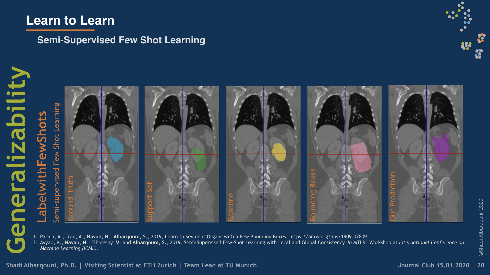

Learn to Learn
 Illustrative figure by Shadi Albarqouni
Illustrative figure by Shadi Albarqouni
To build models that are transferable to different tasks or different data distributions, i.e., non i.i.d., we have investigated meta-learning approaches such as prototypical networks (PN) (Snell et al. 2017). PN learns a class prototype from very few amounts of labeled data, e.g., 1-5 shots, and use the learned prototypes to perform the classification tasks. In the context of medical imaging, we were first to introduce Few-Shot Learning into the MIC community. We have shown in our recent ICML Workshop paper (Ayyad et al. 2019) that our novel Semi-Supervised Few-Shot Learning achieves the state-of-the-art on benchmark datasets; Omniglot, miniImageNet, and TieredImageNet. Further, we have demonstrated in our recent paper (Parida et al. 2019) that such concepts can be utilized in medical imaging segmentation with an extremely low budget of annotated data, e.g., bounding boxes, and better generalization capability, i.e., to new organs or anomalies, however, at the cost of less accurate segmentation. Yet, our proposed models have great potential in clinical practice where a novel application could come in, and only a very few annotations are required, to perform segmentation tasks. Further, such a learning paradigm has a great potential in Federated Learning, where the data acquired at different hospitals capture heterogeneous and non i.i.d data, i.e., various tasks, making proposed models suitable for such a problem.

Collaboration:
Shadi Albarqouni
Visiting Scientist @ ETH Zürich | Senior Research Scientist and Team Lead @ TU Munich
Publications

Learn to Segment Organs with a Few Bounding Boxes
Semantic segmentation is an import task in the medical field to identify the exact extent and orientation of significant structures like organs and pathology. Deep neural networks can perform this task well by leveraging the information from a large well-labeled data-set. This paper aims to present a method that mitigates the necessity of an extensive well-labeled data-set. This method also addresses semi-supervision by enabling segmentation based on bounding box annotations, avoiding the need for full pixel-level annotations. The network presented consists of a single U-Net based unbranched architecture that generates a few-shot segmentation for an unseen human organ using just 4 example annotations of that specific organ. The network is trained by alternately minimizing the nearest neighbor loss for prototype learning and a weighted cross-entropy loss for segmentation learning to perform a fast 3D segmentation with a median score of 54.64%.

Semi-Supervised Few-Shot Learning with Prototypical Random Walks
Recent progress has shown that few-shot learning can be improved with access to unlabelled data, known as semi-supervised few-shot learning(SS-FSL). We introduce an SS-FSL approach, dubbed as Prototypical Random Walk Networks(PRWN), built on top of Prototypical Networks (PN). We develop a random walk semi-supervised loss that enables the network to learn representations that are compact and well-separated. Our work is related to the very recent development on graph-based approaches for few-shot learning. However, we show that compact and well-separated class representations can be achieved by modeling our prototypical random walk notion without needing additional graph-NN parameters or requiring a transductive setting where collective test set is provided. Our model outperforms prior art in most benchmarks with significant improvements in some cases. For example, in a mini-Imagenet 5-shot classification task, we obtain 69.65% accuracy to the 64.59% state-of-the-art. Our model, trained with 40% of the data as labelled, compares competitively against fully supervised prototypical networks, trained on 100% of the labels, even outperforming it in the 1-shot mini-Imagenet case with 50.89% to 49.4% accuracy. We also show that our model is resistant to distractors, unlabeled data that does not belong to any of the training classes, and hence reflecting robustness to labelled/unlabelled class distribution mismatch. We also performed a challenging discriminative power test, showing a relative improvement on top of the baseline of ≈14% on 20 classes on mini-Imagenet and ≈60% on 800 classes on Omniglot. Code will be made available.